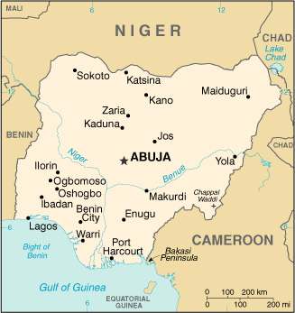

|
Nigeria | |
| Introduction Geography People Government Economy Communications Transportation Military Transnational Issues | ||
|  | ||
| Nigeria | Introduction | Top of Page |
| Background: | Following nearly 16 years of military rule, a new constitution was adopted in 1999 and a peaceful transition to civilian government completed. The new president faces the daunting task of rebuilding a petroleum-based economy, whose revenues have been squandered through corruption and mismanagement, and institutionalizing democracy. In addition, the OBASANJO administration must defuse longstanding ethnic and religious tensions, if it is to build a sound foundation for economic growth and political stability. |
| Nigeria | Geography | Top of Page |
| Location: | Western Africa, bordering the Gulf of Guinea, between Benin and Cameroon |
| Geographic coordinates: | 10 00 N, 8 00 E |
| Map references: | Africa |
| Area: |
total:
923,768 sq km
land: 910,768 sq km water: 13,000 sq km |
| Area - comparative: | slightly more than twice the size of California |
| Land boundaries: |
total:
4,047 km
border countries: Benin 773 km, Cameroon 1,690 km, Chad 87 km, Niger 1,497 km |
| Coastline: | 853 km |
| Maritime claims: |
continental shelf:
200-m depth or to the depth of exploitation
exclusive economic zone: 200 NM territorial sea: 12 NM |
| Climate: | varies; equatorial in south, tropical in center, arid in north |
| Terrain: | southern lowlands merge into central hills and plateaus; mountains in southeast, plains in north |
| Elevation extremes: |
lowest point:
Atlantic Ocean 0 m
highest point: Chappal Waddi 2,419 m |
| Natural resources: | natural gas, petroleum, tin, columbite, iron ore, coal, limestone, lead, zinc, arable land |
| Land use: |
arable land:
33%
permanent crops: 3% permanent pastures: 44% forests and woodland: 12% other: 8% (1993 est.) |
| Irrigated land: | 9,570 sq km (1993 est.) |
| Natural hazards: | periodic droughts |
| Environment - current issues: | soil degradation; rapid deforestation; desertification |
| Environment - international agreements: |
party to:
Biodiversity, Climate Change, Desertification, Endangered Species, Hazardous Wastes, Law of the Sea, Marine Dumping, Marine Life Conservation, Nuclear Test Ban, Ozone Layer Protection, Wetlands
signed, but not ratified: none of the selected agreements |
| Nigeria | People | Top of Page |
| Population: |
126,635,626
note: estimates for this country explicitly take into account the effects of excess mortality due to AIDS; this can result in lower life expectancy, higher infant mortality and death rates, lower population and growth rates, and changes in the distribution of population by age and sex than would otherwise be expected (July 2001 est.) |
| Age structure: |
0-14 years:
43.71% (male 27,842,225; female 27,514,197)
15-64 years: 53.47% (male 34,456,738; female 33,259,194) 65 years and over: 2.82% (male 1,780,862; female 1,782,410) (2001 est.) |
| Population growth rate: | 2.61% (2001 est.) |
| Birth rate: | 39.69 births/1,000 population (2001 est.) |
| Death rate: | 13.91 deaths/1,000 population (2001 est.) |
| Net migration rate: | 0.28 migrant(s)/1,000 population (2001 est.) |
| Sex ratio: |
at birth:
1.03 male(s)/female
under 15 years: 1.01 male(s)/female 15-64 years: 1.04 male(s)/female 65 years and over: 1 male(s)/female total population: 1.02 male(s)/female (2001 est.) |
| Infant mortality rate: | 73.34 deaths/1,000 live births (2001 est.) |
| Life expectancy at birth: |
total population:
51.07 years
male: 51.07 years female: 51.07 years (2001 est.) |
| Total fertility rate: | 5.57 children born/woman (2001 est.) |
| HIV/AIDS - adult prevalence rate: | 5.06% (1999 est.) |
| HIV/AIDS - people living with HIV/AIDS: | 2.7 million (1999 est.) |
| HIV/AIDS - deaths: | 250,000 (1999 est.) |
| Nationality: |
noun:
Nigerian(s)
adjective: Nigerian |
| Ethnic groups: | Nigeria, which is Africa's most populous country, is composed of more than 250 ethnic groups; the following are the most populous and politically influential: Hausa and Fulani 29%, Yoruba 21%, Igbo (Ibo) 18%, Ijaw 10%, Kanuri 4%, Ibibio 3.5%, Tiv 2.5% |
| Religions: | Muslim 50%, Christian 40%, indigenous beliefs 10% |
| Languages: | English (official), Hausa, Yoruba, Igbo (Ibo), Fulani |
| Literacy: |
definition:
age 15 and over can read and write
total population: 57.1% male: 67.3% female: 47.3% (1995 est.) |
| Nigeria | Government | Top of Page |
| Country name: |
conventional long form:
Federal Republic of Nigeria
conventional short form: Nigeria |
| Government type: | republic transitioning from military to civilian rule |
| Capital: | Abuja; note - on 12 December 1991 the capital was officially transferred from Lagos to Abuja; most federal government offices have now made the move to Abuja |
| Administrative divisions: | 36 states and 1 territory*; Abia, Abuja Federal Capital Territory*, Adamawa, Akwa Ibom, Anambra, Bauchi, Bayelsa, Benue, Borno, Cross River, Delta, Ebonyi, Edo, Ekiti, Enugu, Gombe, Imo, Jigawa, Kaduna, Kano, Katsina, Kebbi, Kogi, Kwara, Lagos, Nassarawa, Niger, Ogun, Ondo, Osun, Oyo, Plateau, Rivers, Sokoto, Taraba, Yobe, Zamfara |
| Independence: | 1 October 1960 (from UK) |
| National holiday: | Independence Day, 1 October (1960) |
| Constitution: | NA 1999 new constitution adopted |
| Legal system: | based on English common law, Islamic Shariah law (only in some northern states), and traditional law |
| Suffrage: | 18 years of age; universal |
| Executive branch: |
chief of state:
President Olusegun OBASANJO (since 29 May 1999); note - the president is both the chief of state and head of government
head of government: President Olusegun OBASANJO (since 29 May 1999); note - the president is both the chief of state and head of government cabinet: Federal Executive Council elections: president is elected by popular vote for no more than two four-year terms; election last held 27 February 1999 (next to be held NA 2003) election results: Olusegun OBASANJO elected president; percent of vote - Olusegun OBASANJO (PDP) 62.8%, Olu FALAE (APP-AD) 37.2% |
| Legislative branch: |
bicameral National Assembly consists of Senate (109 seats, three from each state and one from the Federal Capital Territory; members elected by popular vote to serve four-year terms) and House of Representatives (360 seats, members elected by popular vote to serve four-year terms)
elections: Senate - last held 20-24 February 1999 (next to be held NA 2003); House of Representatives - last held 20-24 February 1999 (next to be held NA 2003) election results: Senate - percent of vote by party - PDP 58%, APP 23%, AD 19%; seats by party - PDP 67, APP 23, AD 19; House of Representatives - percent of vote by party - PDP 58%, APP 30%, AD 12%; seats by party - PDP 221, APP 70, AD 69 |
| Judicial branch: | Supreme Court (judges appointed by the Provisional Ruling Council); Federal Court of Appeal (judges are appointed by the federal government on the advice of the Advisory Judicial Committee) |
| Political parties and leaders: | All People's Party or APP [Alhaji Yusuf ALI]; Alliance for Democracy or AD [contested between Yusuf MAMMAN and Alhasi Adamu ABDULKADIR]; People's Democratic Party or PDP [Barnabas GEMADE] |
| Political pressure groups and leaders: | NA |
| International organization participation: | ACP, AfDB, C, CCC, ECA, ECOWAS, FAO, G-15, G-19, G-24, G-77, IAEA, IBRD, ICAO, ICC, ICFTU, ICRM, IDA, IFAD, IFC, IFRCS, IHO, ILO, IMF, IMO, Inmarsat, Intelsat, Interpol, IOC, ISO, ITU, MINURSO, MONUC, NAM, OAU, OIC, OPCW, OPEC, PCA, UN, UNCTAD, UNESCO, UNHCR, UNIDO, UNIKOM, UNITAR, UNMEE, UNMIBH, UNMIK, UNMOP, UNMOT, UNTAET, UNU, UPU, WFTU, WHO, WIPO, WMO, WToO, WTrO |
| Diplomatic representation in the US: |
chief of mission:
Ambassador Jibril AMINU
chancery: 1333 16th Street NW, Washington, DC 20036 telephone: [1] (202) 986-8400 FAX: [1] (202) 775-1385 consulate(s) general: Atlanta and New York |
| Diplomatic representation from the US: |
chief of mission:
Ambassador Howard Franklin JETER
embassy: 8 Mambilla Drive, Abuja mailing address: P. O. Box 554, Lagos telephone: [234] (1) 261-0050, -0078 FAX: [234] (1) 261-0257 |
| Flag description: | three equal vertical bands of green (hoist side), white, and green |
| Nigeria | Economy | Top of Page |
| Economy - overview: | The oil-rich Nigerian economy, long hobbled by political instability, corruption, and poor macroeconomic management, is undergoing substantial economic reform under the new civilian administration. Nigeria's former military rulers failed to diversify the economy away from overdependence on the capital-intensive oil sector, which provides 20% of GDP, 95% of foreign exchange earnings, and about 65% of budgetary revenues. The largely subsistence agricultural sector has failed to keep up with rapid population growth, and Nigeria, once a large net exporter of food, now must import food. Following the signing of an IMF stand-by agreement in August 2000, Nigeria received a debt-restructuring deal from the Paris Club and a $1 billion loan from the IMF, both contingent on economic reforms. Increases in foreign investment and oil production combined with high world oil prices should push growth over 4% in 2001-02. |
| GDP: | purchasing power parity - $117 billion (2000 est.) |
| GDP - real growth rate: | 3.5% (2000 est.) |
| GDP - per capita: | purchasing power parity - $950 (2000 est.) |
| GDP - composition by sector: |
agriculture:
40%
industry: 40% services: 20% (1999 est.) |
| Population below poverty line: | 45% (2000 est.) |
| Household income or consumption by percentage share: |
lowest 10%:
1.6%
highest 10%: 40.8% (1996-97) |
| Inflation rate (consumer prices): | 6.5% (2000 est.) |
| Labor force: | 66 million (1999 est.) |
| Labor force - by occupation: | agriculture 70%, industry 10%, services 20% (1999 est.) |
| Unemployment rate: | 28% (1992 est.) |
| Budget: |
revenues:
$3.4 billion
expenditures: $3.6 billion, including capital expenditures of $NA (2000 est.) |
| Industries: | crude oil, coal, tin, columbite, palm oil, peanuts, cotton, rubber, wood, hides and skins, textiles, cement and other construction materials, food products, footwear, chemicals, fertilizer, printing, ceramics, steel |
| Industrial production growth rate: | 1.5% (2000 est.) |
| Electricity - production: | 18.7 billion kWh (1999) |
| Electricity - production by source: |
fossil fuel:
52.94%
hydro: 47.06% nuclear: 0% other: 0% (1999) |
| Electricity - consumption: | 17.372 billion kWh (1999) |
| Electricity - exports: | 19 million kWh (1999) |
| Electricity - imports: | 0 kWh (1999) |
| Agriculture - products: | cocoa, peanuts, palm oil, corn, rice, sorghum, millet, cassava (tapioca), yams, rubber; cattle, sheep, goats, pigs; timber; fish |
| Exports: | $22.2 billion (f.o.b., 2000 est.) |
| Exports - commodities: | petroleum and petroleum products 95%, cocoa, rubber |
| Exports - partners: | US 36%, India 9%, Spain 8%, Brazil 6%, France 6%, (1999) |
| Imports: | $10.7 billion (f.o.b., 2000 est.) |
| Imports - commodities: | machinery, chemicals, transport equipment, manufactured goods, food and live animals |
| Imports - partners: | UK 11%, Germany 10%, US 9%, France 8%, China 6% (1999) |
| Debt - external: | $32 billion (2000 est.) |
| Economic aid - recipient: | ODA $250 million (1998) |
| Currency: | naira (NGN) |
| Currency code: | NGN |
| Exchange rates: | nairas per US dollar - 110.005 (January 2001), 101.697 (2000), 92.338 (1999), 21.886 (1998), 21.886 (1997), 21.884 (1996) |
| Fiscal year: | calendar year |
| Nigeria | Communications | Top of Page |
| Telephones - main lines in use: | 500,000 (2000) |
| Telephones - mobile cellular: | 26,700 (1997) |
| Telephone system: |
general assessment:
an inadequate system, further limited by poor maintenance; major expansion is required and a start has been made
domestic: intercity traffic is carried by coaxial cable, microwave radio relay, a domestic communications satellite system with 19 earth stations, and a coastal submarine cable; mobile cellular facilities and the Internet are available international: satellite earth stations - 3 Intelsat (2 Atlantic Ocean and 1 Indian Ocean); coaxial submarine cable SAFE (South African Far East) |
| Radio broadcast stations: | AM 82, FM 35, shortwave 11 (1998) |
| Radios: | 23.5 million (1997) |
| Television broadcast stations: | 2 government-controlled; note - in addition, in 1993, 14 licenses to operate private television stations were granted (1999) |
| Televisions: | 6.9 million (1997) |
| Internet country code: | .ng |
| Internet Service Providers (ISPs): | 11 (2000) |
| Internet users: | 100,000 (2000) |
| Nigeria | Transportation | Top of Page |
| Railways: |
total:
3,557 km
narrow gauge: 3,505 km 1.067-m gauge standard gauge: 52 km 1.435-m gauge note: years of neglect of both the rolling stock and the right-of-way have seriously reduced the capacity and utility of the system; a project to restore Nigeria's railways is now underway |
| Highways: |
total:
194,394 km
paved: 60,068 km (including 1,194 km of expressways) unpaved: 134,326 km note: many of the roads reported as paved may be graveled; because of poor maintenance and years of heavy freight traffic - in part the result of the failure of the railroad system - much of the road system is barely usable (1997) |
| Waterways: |
8,575 km
note: consisting of the Niger and Benue rivers and smaller rivers and creeks |
| Pipelines: | crude oil 2,042 km; petroleum products 3,000 km; natural gas 500 km |
| Ports and harbors: | Calabar, Lagos, Onne, Port Harcourt, Sapele, Warri |
| Merchant marine: |
total:
41 ships (1,000 GRT or over) totaling 357,372 GRT/636,254 DWT
ships by type: bulk 1, cargo 10, chemical tanker 4, petroleum tanker 24, roll on/roll off 1, specialized tanker 1 (2000 est.) |
| Airports: | 70 (2000 est.) |
| Airports - with paved runways: |
total:
36
over 3,047 m: 7 2,438 to 3,047 m: 10 1,524 to 2,437 m: 10 914 to 1,523 m: 7 under 914 m: 2 (2000 est.) |
| Airports - with unpaved runways: |
total:
34
1,524 to 2,437 m: 2 914 to 1,523 m: 14 under 914 m: 18 (2000 est.) |
| Heliports: | 1 (2000 est.) |
| Nigeria | Military | Top of Page |
| Military branches: | Army, Navy, Air Force |
| Military manpower - military age: | 18 years of age |
| Military manpower - availability: | males age 15-49: 29,940,922 (2001 est.) |
| Military manpower - fit for military service: | males age 15-49: 17,201,367 (2001 est.) |
| Military manpower - reaching military age annually: | males: 1,375,112 (2001 est.) |
| Military expenditures - dollar figure: | $360 million (FY00) |
| Military expenditures - percent of GDP: | 10% (FY00) |
| Nigeria | Transnational Issues | Top of Page |
| Disputes - international: | delimitation of international boundaries in the vicinity of Lake Chad, the lack of which led to border incidents in the past, has been completed and awaits ratification by Cameroon, Chad, Niger, and Nigeria; dispute with Cameroon over land and maritime boundaries around the Bakasi Peninsula is currently before the ICJ; tripartite maritime boundary and economic zone dispute with Equatorial Guinea and Cameroon is currently before the ICJ |
| Illicit drugs: | facilitates movement of heroin en route from Southeast and Southwest Asia to Western Europe and North America; increasingly a transit route for cocaine from South America intended for European, East Asian, and North American markets |
{kind=link}
{kind=link}